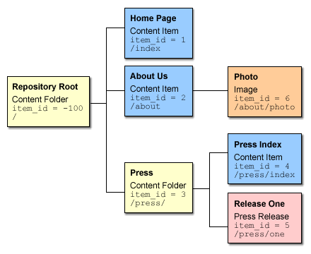

The content repository organizes content items in a hierarchical structure similar to a file system. You manage content items in the repository using the same basic operations as in a file system:
The content repository adds an additional twist to a traditional filesystem: any content item, not just a folder, may serve as a container for any number of other content items. For example, imagine a book consisting of a preface, a number of chapters and a bibliography (which in turn may have any number of entries). The book itself is a content item, in that it has attributes (publisher, ISBN number, publication date, synopsis, etc.) associated with it. It also is the logical container for all its components.
It is important to note that folders are simply a special subtype of content item. The content repository's representation of a parent-child relationship between a folder and the items it contains is no different from the relationship between a book and its chapters. Folders may be thought of simply as generic containers for grouping items that are not necessarily part of a greater whole.
Consider a simple repository structure with the following contents:
Note the following:
Note that the same effective organization could have been achieved by creating the "Press Index" item under the root, and having press releases as its children. Using the folder approach may have the following advantages:
By default, the content repository has one root folder for content items and one for templates. In some situations, that is not enough. For example, a package that can be instantiated several times might wish to store the content for each instance in its own content root. Creating your own content (and template) root also has the advantage that you will not accidentally access another package's content nor will another package access your content. Not that that could do any harm, because you have secured all your content through appropriate permissions.
We only talk about creating content roots from here on — creating template roots is completely analogous. You create your own content root by calling content_folder.new in PL/SQL:
declare
v_my_content_root integer;
begin
v_my_content_root := content_folder.new(
name => 'my_root',
label => 'My Root',
parent_id => 0
);
-- Store v_my_content_root in a safe place
end;
/
The important point is that you have to pass in 0 for the parent_id. This parent_id is special in that it indicates folders with no parent.
The content repository does not keep track of who created what root folders. You have to do that yourself. In the above example, you need to store the value v_my_content_root somewhere, for example a table that is specific for your package, otherwise you won't have a reliable way of accessing your new content root.
With multiple content roots, there can be many items with item_path '/news/article' and you need to tell the content repository which root you are talking about. For example, to retrieve content through content_item.get_id, you pass the id of your content root as the root_folder_id parameter to specify the content root under which the item_path should be resolved.